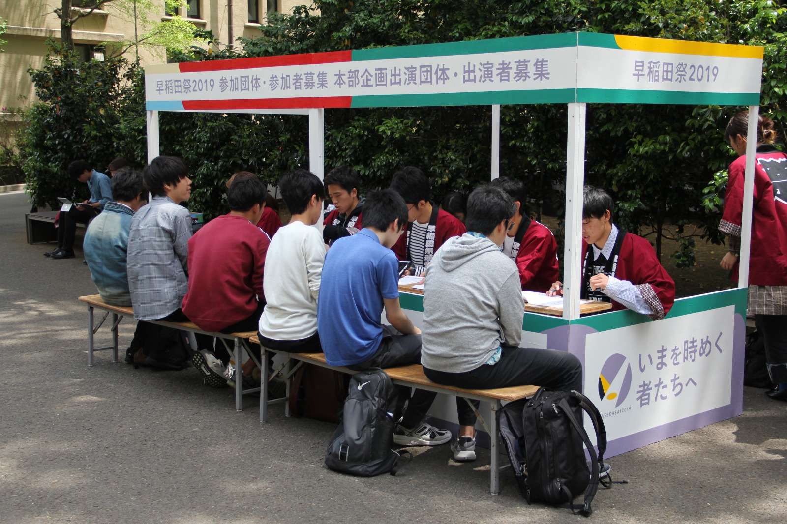

©早稲田祭運営スタッフ2020 All Rights Reserved.
参加対応局

参加対応局は、早稲田祭と参加団体・参加者を繋げる局です。約半年間、二人三脚で歩んできた参加団体・参加者が早稲田祭当日に輝いている姿やその笑顔を見たときには、今までにない達成感や満足感を得ることができます。活動内容は決して簡単なものではありませんが、早稲田祭を一緒に盛り上げてくれる彼らの想いを直接カタチにできるのは参加対応局だけ！
また、参加対応局には100人を超える局員がいます。大人数で行く合宿もレクリエーションも盛りだくさんです！
頑張る人の支えになりたい人、参加団体・参加者のサポートを通して最高の早稲田祭を創りたい人、たくさん友達をつくりたい人など大歓迎！ みなさんと一緒に活動できることを局員一同、楽しみに待っています！
○飲食物販売企画チーム
飲食物販売企画の管理を行うチームです。早稲田祭には例年90以上の参加団体・参加者が飲食屋台を出店しており、その全てを管理します。当日に担当団体がいきいきと出店している姿を見たときや早稲田祭後に感謝の言葉を伝えられたときには、言葉にできないほどのやりがいが感じられます。中には自分の担当団体と早稲田祭後も仲良しなチーム員も……！ 人とコミュニケーションをとることが好きな人はもちろん、人と関わることが苦手な人もこのチームでの活動を通じてきっと成長できるはず！ チーム員はもちろん担当団体とも協力して日本一盛り上がる祭を創りましょう！
◯大隈講堂前ステージ企画チーム
大隈講堂前ステージ企画の運営を行うチームです。ステージを支える他のサークルとも連携をとり、誰もが憧れる早大生の文化発表をサポートします。比較的少人数のチームだからこそチーム員と信頼し合いながら活動し共に成長できる環境がここにあります。 好きなことに全力で取り組む早大生を華の舞台で輝かせ、祭を大いに盛り上げましょう！
○屋内企画チーム
屋内企画の運営を行うチームです。私たちが担当する企画数は、早稲田祭で行われる企画数の約半分であるおよそ200企画にのぼります。展示系の企画や体験型の企画から、ライブ系の企画、ゲストを呼ぶ企画まで多種多様な企画を通して早稲田文化を最も感じられるのが魅力です！ また、屋内企画チームは運営スタッフで1番の大所帯でとてもにぎやかなチーム！ たくさんのレクリエーションでチームの先輩や同期ともどんどん仲良くなっちゃいましょう！ 早稲田文化を感じられる活動がしたい人や、友達をたくさんつくりたい人をお待ちしています！
○キャンパス内ステージ企画チーム
キャンパス内ステージ企画の運営を行うチームです。キャンパス内ステージ企画には、大規模から小・中規模までバラエティに富んだ参加団体・参加者が参加します。担当した団体の輝く姿にあなたも魅力されること間違いなし！ また、ステージの背景となるパーテーションの制作、当日の音響操作やステージ周辺の警備などと活動内容は多岐に渡るため、たくさんのことに挑戦してみたい人におすすめです！ 早稲田祭までの日々を一緒に駆け抜けられることを楽しみにしています！
○ストリート企画チーム
ストリート企画の運営を行うチームです。ストリート企画とは、大学構内にある屋外のスペースで文化発表を行う企画です。この企画に参加するのは主にパフォーマンスサークルや出版系サークル、展示系サークルなど！ 個性豊かな参加団体・参加者と関わることで「早稲田文化」を日々実感できます！ また、ストリート企画チームは実は今年からできた新しいチーム。これから加入する新規スタッフのフレッシュな意見をたくさん取り入れていくため、1年目から活躍したいあなたをお待ちしています！
◯早稲田アリーナ企画チーム
早稲田アリーナ企画の運営を行うチームです。昨年度始まったばかりの企画のため今年は新たな試みもあり、新しいことに挑戦したい人や大規模な企画に携わりたい人などやる気あふれる人におすすめです！ 早稲田祭に関する知識が豊富で頼れるチーム員がみなさんを待っています。明るい雰囲気のチームで楽しい運営スタッフ生活を送れること間違いなし！ 私たちと早稲田アリーナ企画をさらに盛り上げませんか？
○飲食物販売企画チーム
飲食物販売企画の管理を行うチームです。早稲田祭には例年90以上の参加団体・参加者が飲食屋台を出店しており、その全てを管理します。当日に担当団体がいきいきと出店している姿を見たときや早稲田祭後に感謝の言葉を伝えられたときには、言葉にできないほどのやりがいが感じられます。中には自分の担当団体と早稲田祭後も仲良しなチーム員も……！ 人とコミュニケーションをとることが好きな人はもちろん、人と関わることが苦手な人もこのチームでの活動を通じてきっと成長できるはず！ チーム員はもちろん担当団体とも協力して日本一盛り上がる祭を創りましょう！
◯大隈講堂前ステージ企画チーム
大隈講堂前ステージ企画の運営を行うチームです。ステージを支える他のサークルとも連携をとり、誰もが憧れる早大生の文化発表をサポートします。比較的少人数のチームだからこそチーム員と信頼し合いながら活動し共に成長できる環境がここにあります。 好きなことに全力で取り組む早大生を華の舞台で輝かせ、祭を大いに盛り上げましょう！
○屋内企画チーム
屋内企画の運営を行うチームです。私たちが担当する企画数は、早稲田祭で行われる企画数の約半分であるおよそ200企画にのぼります。展示系の企画や体験型の企画から、ライブ系の企画、ゲストを呼ぶ企画まで多種多様な企画を通して早稲田文化を最も感じられるのが魅力です！ また、屋内企画チームは運営スタッフで1番の大所帯でとてもにぎやかなチーム！ たくさんのレクリエーションでチームの先輩や同期ともどんどん仲良くなっちゃいましょう！ 早稲田文化を感じられる活動がしたい人や、友達をたくさんつくりたい人をお待ちしています！
○キャンパス内ステージ企画チーム
キャンパス内ステージ企画の運営を行うチームです。キャンパス内ステージ企画には、大規模から小・中規模までバラエティに富んだ参加団体・参加者が参加します。担当した団体の輝く姿にあなたも魅力されること間違いなし！ また、ステージの背景となるパーテーションの制作、当日の音響操作やステージ周辺の警備などと活動内容は多岐に渡るため、たくさんのことに挑戦してみたい人におすすめです！ 早稲田祭までの日々を一緒に駆け抜けられることを楽しみにしています！
○ストリート企画チーム
ストリート企画の運営を行うチームです。ストリート企画とは、大学構内にある屋外のスペースで文化発表を行う企画です。この企画に参加するのは主にパフォーマンスサークルや出版系サークル、展示系サークルなど！ 個性豊かな参加団体・参加者と関わることで「早稲田文化」を日々実感できます！ また、ストリート企画チームは実は今年からできた新しいチーム。これから加入する新規スタッフのフレッシュな意見をたくさん取り入れていくため、1年目から活躍したいあなたをお待ちしています！
◯早稲田アリーナ企画チーム
早稲田アリーナ企画の運営を行うチームです。昨年度始まったばかりの企画のため今年は新たな試みもあり、新しいことに挑戦したい人や大規模な企画に携わりたい人などやる気あふれる人におすすめです！ 早稲田祭に関する知識が豊富で頼れるチーム員がみなさんを待っています。明るい雰囲気のチームで楽しい運営スタッフ生活を送れること間違いなし！ 私たちと早稲田アリーナ企画をさらに盛り上げませんか？